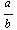
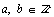

The rational numbers are the first set of numbers that are closed under addition, subtraction, multiplication and division. They are however a little more difficult to list. Instead, the following is a definition of the rational numbers.
Definition of Rational Numbers (Q)
A number, n, is a rational number if it can be written as a ratio of integers. That is,
n is rational if it can be written as  where 
Rational numbers are more commonly referred to as fractions, although we must remember that fractions include numbers that are larger than zero. Many decimals are also rational numbers because they also can be written as a ratio of integers. Specifically, any decimal that terminates (ends) or repeats, can be written as a ratio of integers. In addition to integers, the next chapter will contain a brief discussion on changing numbers from fractional to decimal form and back. Additionally, we will comment on mixed numbers and improper fractions.